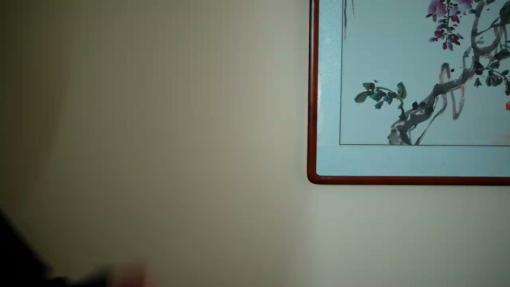
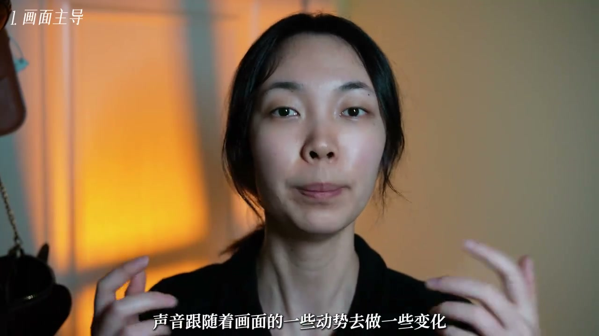
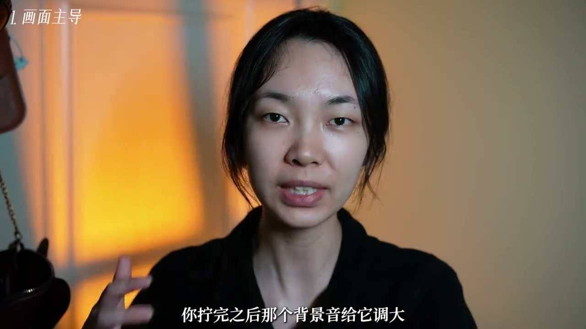
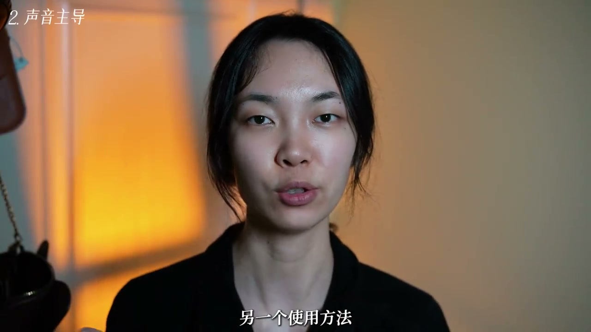
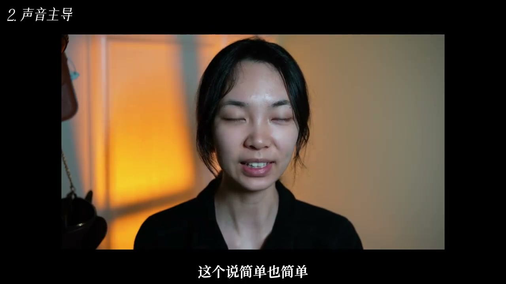

01
中文
今天我们来选一个好东西，让声音和画面联动起来。
EN
Today we'll try something great—syncing sound with the frame.
表达提示sound-frame sync（声画联动）

Scene English · 剪辑 · 声画联动
2-Min Sound-Frame Sync for a Premium Vlog Edit
🎧 语音讲解
Opening: today let's try something great—s…
情境声画联动的第一思路：画面主导。
今天我们来选一个好东西，让声音和画面联动起来。
Today we'll try something great—syncing sound with the frame.
表达提示sound-frame sync（声画联动）
让画面主导，声音跟随着画面的一些动作去做一些变化。
Let the image lead, and the sound follows the actions on screen.
表达提示image leads（画面主导）
sound-frame sync（声画联动
image leads（画面主导

Action examples: the action usually signal…
情境关键动作瞬间匹配声音变化。
这个动作一般就是含有开始或者结束意味的动作。
This action usually carries a sense of start or end.
表达提示start or end（开始或结束）
比如说戴耳机、打开声音机、开门、关门、打开包的拉链。
Like putting on headphones, switching on a device, opening or closing a door, unzipping a bag.
表达提示everyday actions（日常动作）
你一开始那个背景音比较小，你拧完之后那个背景音给它调大。
Start the background music low, then turn it up after the action.
表达提示turn it up（调大音量）
这种细节真的很出彩，就是一种含蓄的高级感。
These details really shine—a subtle premium feel.
表达提示subtle premium（含蓄高级）
start or end（开始或结束
everyday actions（日常动作

The second magic method: let the music lea…
情境音乐主导的卡点剪辑与两种适配手法。
另一个神方法就是让音乐做主导，画面跟随着音乐的变化去做剪辑。
The other magic method: let music lead and cut the image to its changes.
表达提示music leads（音乐主导）
卡点视频就全部顺着音乐的节奏进行剪辑。
Beat-sync videos are all cut to the music's rhythm.
表达提示beat-sync（卡点）
需要画面和声音匹配上。
The frames must match the sound.
表达提示match the sound（声画匹配）
第一个就是可以变速，第二个就是可以运用跳切的手法。
First you can change speed; second, use jump cuts.
表达提示jump cuts（跳切）
music leads（音乐主导
beat-sync（卡点

Examples: here are two from my own edits. …
情境实战案例演示两种手法。
这里我写字的这个动作和音乐就是匹配上的。
Here my writing action is matched to the music.
表达提示matched to music（与音乐匹配）
后面我也是根据音乐的变换去变换了画面。
Afterward I changed the visuals with the music's shifts.
表达提示shift with music（随乐变换）
这里呢就是根据音乐做了一些跳切的处理。
Here I used jump cuts based on the music.
表达提示jump-cut to the beat（踩点跳切）
matched to music（与音乐匹配
shift with music（随乐变换

Ending: did you learn it? I share lots of …
情境情感收尾与分享呼吁。
这个技巧我自己真的真的很喜欢，我第一次看到的时候真的觉得很高级。
I genuinely love this trick—it felt so premium when I first saw it.
表达提示feels premium（高级感）
如果你也觉得受益的话，拜托分享出去让好东西被更多人知道。
If it helped you, please share it so more people know.
表达提示share it out（分享出去）
feels premium（高级感
share it out（分享出去
说画面主导
说动作声音
说音乐主导
说跳切变速
动作瞬间让声音变化，细节才出彩。
卡点剪辑要顺着音乐节奏。
跳切变速要以前后画面有逻辑为前提。
含蓄的高级感优于花里胡哨的炫技。